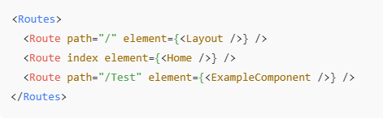
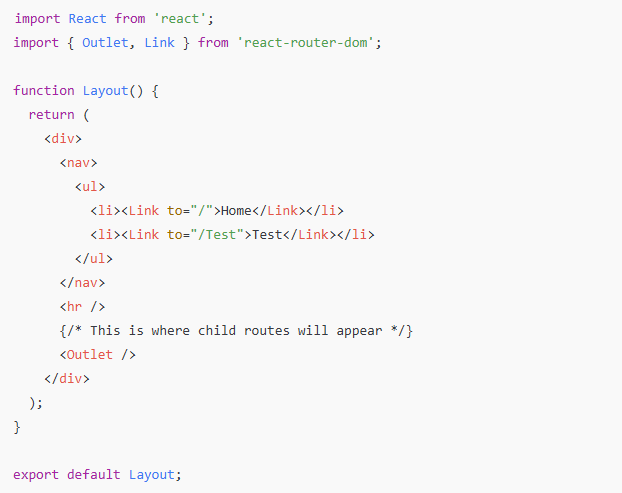
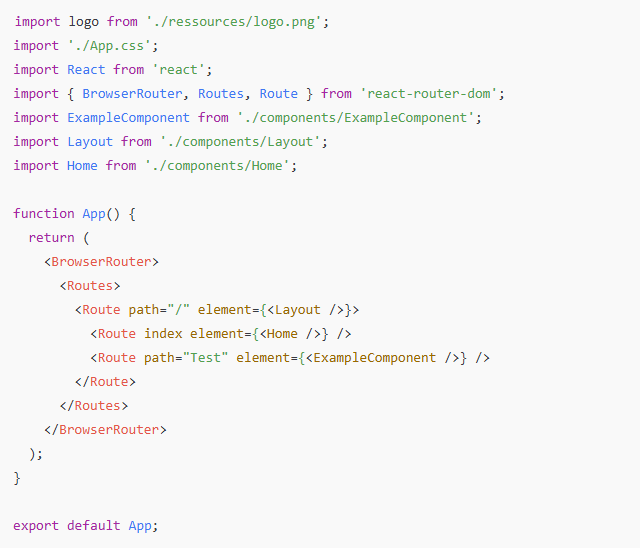

Here’s the code you currently have:
At first glance, it looks like this should work — Layout at /, Home as the index route, and ExampleComponent at /Test.
But the issue is that:
That’s why the navigation bar (inside Layout) disappears on all routes except /.
In React Router v6, if you want a component like Layout to wrap multiple routes, you must define it as a parent route and place the child routes inside it.
Example structure:
Now, whenever you navigate between / and /Test, the Layout stays in place, and only the child content changes.

For this nesting to work, your Layout component must include < Outlet />. This is where React Router will render the child routes.
Example Layout.js:
Without < Outlet />, your child routes (Home, Test) won’t render inside Layout.
Here’s the fully corrected version of your App.js:

Your navigation only appeared at / because Layout was not wrapping the other routes. By restructuring your routing with nested routes and using
This approach is the recommended pattern in React Router v6 for handling shared layouts like headers, sidebars, and footers.